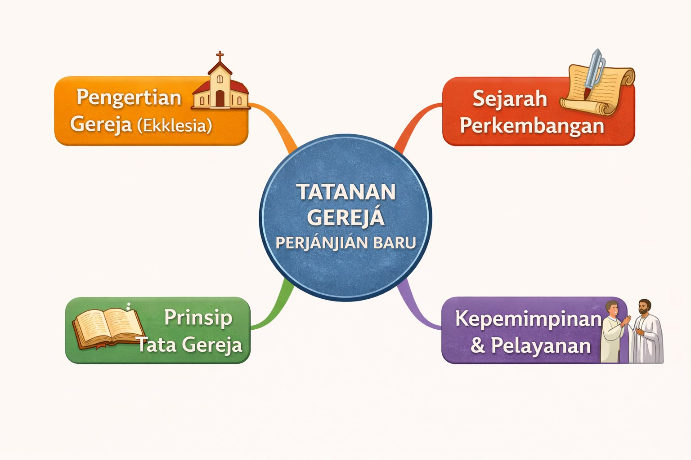

Gereja Bukan Sekadar Bangunan
Pernahkah kamu bertanya-tanya, apa sebenarnya yang dimaksud dengan "gereja"? Apakah hanya gedung megah dengan menara tinggi? Atau ada sesuatu yang lebih dalam dari itu?
Bayangkan gereja sebagai sebuah keluarga besar yang dipersatukan oleh kasih Kristus. Tatanan Gereja Perjanjian Baru adalah fondasi yang membentuk identitas, komitmen, dan tujuan gereja sejak masa para rasul hingga kini.
Gambar generated AI
Peta Konsep Tatanan Gereja
Sebelum kita melangkah lebih jauh, mari lihat gambaran besar tentang apa yang akan kamu pelajari dalam materi ini.

Kata "gereja" berasal dari bahasa Yunani ekklesia yang berarti "perkumpulan orang-orang yang dipanggil keluar" untuk mengikuti Kristus.
Perjalanan Waktu: Dari Pentakosta hingga Kini
Mari kita telusuri perjalanan gereja dari masa kelahirannya hingga perkembangannya menjadi institusi global yang kita kenal sekarang.
Kelahiran gereja mula-mula dengan turunnya Roh Kudus. Para rasul mulai memberitakan Injil.
Periode penulisan kitab-kitab Perjanjian Baru dan penyebaran Injil ke seluruh wilayah Mediterania.
Pengakuan Kekaisaran Romawi terhadap Agama Kristen sebagai agama resmi.
Kaisar Theodosius menjadikan Kekristenan sebagai satu-satunya agama resmi Kekaisaran Romawi dan memperkuat status kekristenan.
Pada tahun berapakah Hari Pentakosta terjadi dan gereja mula-mula lahir?
Apa Itu Gereja? Memahami Ekklesia
Kata "gereja" memiliki makna yang sangat kaya. Dalam berbagai bahasa, gereja disebut: church (Inggris), Kirche (Jerman), église (Prancis), dan iglesia (Spanyol). Semuanya berakar pada kata Yunani ekklesia.
Ekklesia bukan hanya menunjuk pada tempat berkumpul, tetapi pada orang-orang yang diselamatkan oleh Yesus Kristus dan menjadi anggota tubuh-Nya. Gereja memiliki dua aspek penting:
1. Gereja yang Kasat Mata - Lembaga dan organisasi gereja yang bisa kita lihat secara fisik, seperti gereja lokal, denominasi, dan institusi gereja lainnya.
2. Gereja yang Tak Kasat Mata - Kumpulan semua orang yang sungguh-sungguh diselamatkan oleh Yesus Kristus di seluruh dunia dan sepanjang zaman.
Apa yang dimaksud dengan "gereja yang tak kasat mata"?
Kepemimpinan dalam Gereja Perjanjian Baru
Dalam Perjanjian Baru, kepemimpinan gereja memiliki struktur yang unik. Para rasul adalah pemimpin utama yang ditunjuk langsung oleh Yesus. Namun, seiring berkembangnya gereja, muncul pemimpin-pemimpin lain yang membantu pelayanan.
Terdapat dua peran kepemimpinan penting: Penatua (presbiter) dan Uskup/Penilik (episkopos). Yang menarik, para penilik gereja dipilih dari kalangan penatua, bukan sebagai atasan mereka.
Kata "uskup" dalam bahasa Yunani adalah episkopos yang artinya "penilik" atau "pengawas". Mereka bertugas mengawasi dan membimbing jemaat.
Cocokkan peran dengan tanggung jawabnya:
Tujuh Prinsip Tata Gereja yang Kuat
Perjanjian Baru memberikan fondasi kuat bagi tata kelola gereja. Berikut adalah prinsip-prinsip utama yang tetap relevan hingga kini:
1. Kepemimpinan Rasul - Para rasul dan pemimpin gereja membimbing jemaat sesuai ajaran Kristus.
2. Kedisiplinan Gereja - Gereja memiliki otoritas untuk menegakkan disiplin bagi anggota yang menyimpang.
3. Persatuan dalam Keragaman - Orang dari berbagai latar belakang bersatu dalam Kristus.
4. Pelayanan dan Karunia Roh - Setiap anggota memiliki karunia untuk melayani.
5. Pengajaran dan Iman - Gereja adalah tempat belajar dan bertumbuh dalam iman.
6. Kesaksian dan Penginjilan - Memberitakan Injil adalah misi utama gereja.
7. Ibadah dan Sakramen - Baptisan dan Perjamuan Kudus adalah bagian penting kehidupan gereja.
Prinsip mana yang menekankan bahwa setiap orang Kristen memiliki pemberian khusus dari Roh Kudus untuk melayani?
Rangkuman: Gereja yang Hidup Sepanjang Zaman
Poin-Poin Penting:
- Gereja adalah Persekutuan: Bukan sekadar bangunan, melainkan kumpulan orang yang diselamatkan oleh Kristus.
- Fondasi Sejarah: Gereja lahir pada Hari Pentakosta (33 M) dan berkembang melalui perjuangan dan penganiayaan hingga diakui secara resmi.
- Kepemimpinan yang Terstruktur: Para rasul, penatua, dan uskup memiliki peran penting dalam membimbing jemaat.
- Tujuh Prinsip Utama: Kepemimpinan rasul, kedisiplinan, persatuan, pelayanan, pengajaran, penginjilan, dan ibadah membentuk identitas gereja.
- Relevansi Masa Kini: Prinsip-prinsip Perjanjian Baru tetap menjadi landasan gereja modern dalam menghadapi tantangan zaman.
- Misi Gereja: Menyebarkan Injil dan melayani dunia dengan kasih Kristus adalah panggilan abadi gereja.
Refleksi: Peranmu dalam Gereja
Setelah mempelajari Tatanan Gereja Perjanjian Baru, saatnya untuk merefleksikan apa yang telah kamu pelajari dan bagaimana kamu dapat menerapkannya.
🎉 Selamat!
Kamu telah menyelesaikan pembelajaran tentang Tatanan Gereja Perjanjian Baru.